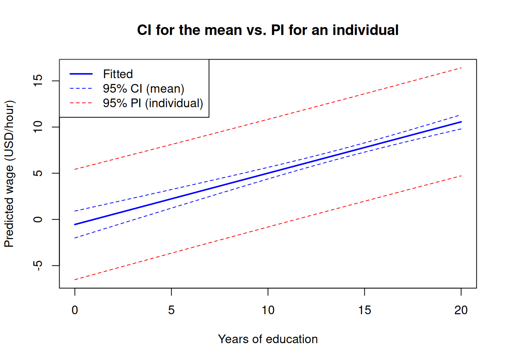

Code
library(wooldridge)
data("wage1")By the end of this chapter the reader should be able to:
predict(), AIC(), BIC(), and anova() in R to predict from a fitted model and to choose among competing specifications.Two recruiters interview the same candidate — a 24-year-old with 16 years of education, 5 years of experience, and 2 years of tenure — and both fit the same wage regression to the same data. The first reports a 95% interval of [$5.7, $7.2] for the expected wage; the second reports [$0.5, $12.4]. Both are correct. Which interval is which?
The answer turns on a distinction that is easy to miss: the first recruiter is reporting uncertainty about the average wage of people like this candidate, while the second is reporting uncertainty about this candidate’s actual wage. The same fitted model produces both numbers — they answer different questions. This chapter is about that distinction and the related question of how to choose between competing models in the first place.
to Chapter 4 we have used regression for one purpose: to estimate the ceteris paribus effect of \(x\) on \(y\). The coefficient \(\beta_j\) was the object of interest, and the entire apparatus of Gauss–Markov assumptions, \(t\)-tests, and \(F\)-tests was in the service of getting \(\hat\beta_j\) right — unbiased, efficient, and with valid standard errors.
Econometrics also has a second, equally legitimate use: prediction. Here we do not particularly care about the value of any individual \(\beta_j\); we care about the accuracy of the fitted value \(\hat y_0\) for a new observation.
The two goals overlap but are not the same:
A model can be excellent for one purpose and poor for the other. A predictor of road accidents that includes “ice-cream sales” as a regressor may work well because ice cream proxies for hot weather; it is useless for causal policy advice about ice cream. Conversely, an instrumental-variables estimate of the return to schooling might identify a clean causal parameter from a tiny slice of variation in the data, while leaving most of the variability in wages unexplained.
A high \(R^2\) tells you that the fitted values track \(y\) well. It does not tell you that any individual coefficient measures a causal effect. The identification strategy — random assignment, an instrument, a natural experiment, or a credible argument that \(\mathbb{E}[u \mid x] = 0\) — is what licences causal interpretation. Fit-based selection criteria such as adjusted \(R^2\), AIC, and BIC are tools for prediction; they cannot rescue a model that suffers from omitted-variable bias.
Consider, for clarity, the simple linear regression (SLR) model:
\[ y_i = \beta_0 + \beta_1 x_i + u_i, \qquad \mathbb{E}[u_i \mid x_i] = 0. \]
Given the OLS estimates \((\hat\beta_0, \hat\beta_1)\) and a new value \(x_0\) of the regressor, the point prediction is just the fitted value of the regression at \(x_0\):
\[ \hat y_0 = \hat\beta_0 + \hat\beta_1 x_0. \]
The same construction extends, term by term, to multiple linear regression (MLR). If \(x_0 = (1, x_{01}, x_{02}, \dots, x_{0k})\) is the row vector of regressor values for the new observation, then
\[ \hat y_0 = \hat\beta_0 + \hat\beta_1 x_{01} + \hat\beta_2 x_{02} + \cdots + \hat\beta_k x_{0k}. \]
How good is this prediction? The natural quantity is the forecast error:
\[ f \equiv y_0 - \hat y_0 = (\beta_0 + \beta_1 x_0 + u_0) - (\hat\beta_0 + \hat\beta_1 x_0). \]
Taking the conditional expectation under MLR.1–MLR.4,
\[ \mathbb{E}[f \mid x_0] = (\beta_0 + \beta_1 x_0) - \mathbb{E}[\hat\beta_0 + \hat\beta_1 x_0] = 0. \]
So \(\hat y_0\) is an unbiased predictor of \(y_0\). In fact, under SLR.1–SLR.5 (and their MLR counterparts), one can show that \(\hat y_0\) has the smallest variance among all linear unbiased predictors: it is the Best Linear Unbiased Predictor (BLUP).
The same number \(\hat y_0\) is both the point prediction of the individual outcome \(y_0\) and the estimate of the conditional mean \(\mathbb{E}[y \mid x_0]\). The two interpretations of \(\hat y_0\) are numerically identical, but they have different uncertainty. The next section makes this concrete.
A point estimate is rarely enough. We need an interval that quantifies uncertainty — and there are two distinct uncertainties to quantify.
The conditional mean \(\mathbb{E}[y \mid x_0] = \beta_0 + \beta_1 x_0\) is a fixed (non-random) population quantity. Its estimator is \(\hat y_0 = \hat\beta_0 + \hat\beta_1 x_0\), which is random because the OLS estimates are random. Its variance is
\[ \operatorname{Var}(\hat y_0 \mid x) = \sigma^2 \left[\frac{1}{n} + \frac{(x_0 - \bar x)^2}{\mathrm{SST}_x}\right], \]
where \(\mathrm{SST}_x = \sum_{i=1}^{n} (x_i - \bar x)^2\) is the total sum of squares of the regressor. Replacing \(\sigma^2\) by the estimator \(\hat\sigma^2 = \mathrm{SSR}/(n - k - 1)\), the \(100(1 - \alpha)\%\) confidence interval for the mean prediction is
\[ \hat y_0 \;\pm\; t_c \cdot \hat\sigma \sqrt{\frac{1}{n} + \frac{(x_0 - \bar x)^2}{\mathrm{SST}_x}}, \]
with \(t_c\) the appropriate critical value of a \(t\)-distribution with \(n - k - 1\) degrees of freedom.
The new outcome \(y_0 = \beta_0 + \beta_1 x_0 + u_0\) is random because both the OLS estimates and the new error \(u_0\) are random. Assuming \(u_0\) is independent of the sample,
\[ \operatorname{Var}(y_0 - \hat y_0 \mid x) = \sigma^2 \left[1 + \frac{1}{n} + \frac{(x_0 - \bar x)^2}{\mathrm{SST}_x}\right]. \]
The extra “\(1\)” inside the brackets is the contribution of \(u_0\) — the irreducible part of the new draw that no amount of data could ever predict. The \(100(1 - \alpha)\%\) prediction interval for \(y_0\) is
\[ \hat y_0 \;\pm\; t_c \cdot \hat\sigma \sqrt{1 + \frac{1}{n} + \frac{(x_0 - \bar x)^2}{\mathrm{SST}_x}}. \]
Imagine two questions about the candidate. Question A: “across all women like this in the population, what is their average wage?” Question B: “what wage will this particular woman earn?” Even with infinite data we could pin down Question A exactly — but Question B still depends on this woman’s specific ability, employer, and luck, bundled into \(u_0\). That irreducible per-person variation is the “\(+1\)”.
In MLR the same logic gives \(\operatorname{Var}(y_0 - \hat y_0 \mid X) = \sigma^2 [1 + x_0'(X'X)^{-1} x_0]\), with the CI for the mean obtained by dropping the “\(1\)” in the brackets.
| Quantity targeted | Variance ingredient | Interval | Width |
|---|---|---|---|
| Mean \(\mathbb{E}[y \mid x_0]\) | \(1/n + (x_0 - \bar x)^2 / \mathrm{SST}_x\) | Confidence interval | Narrower |
| Individual \(y_0\) | \(1 + 1/n + (x_0 - \bar x)^2 / \mathrm{SST}_x\) | Prediction interval | Wider |
The PI is always wider than the CI. The gap is governed by the “1”: the irreducible variance of the new draw \(u_0\).
A few more observations on the formulas:
Suppose we have estimated the SLR
\[ \hat y = 2.0 + 0.7\,x, \]
with sample size \(n = 100\), \(\bar x = 12\), \(\mathrm{SST}_x = 200\), and \(\hat\sigma^2 = 4\) (so \(\hat\sigma = 2\)). We want to predict at \(x_0 = 16\). Using \(t_c \approx 1.98\) for a 95% interval with 98 degrees of freedom:
Point prediction. \(\hat y_0 = 2.0 + 0.7 \times 16 = 13.2\).
CI for the mean \(\mathbb{E}[y \mid x_0]\). \[ \mathrm{se}(\hat y_0) = \hat\sigma \sqrt{\tfrac{1}{100} + \tfrac{(16-12)^2}{200}} = 2\sqrt{0.01 + 0.08} = 0.6. \] \[ \text{95\% CI:} \quad 13.2 \pm 1.98 \times 0.6 = [12.01,\ 14.39]. \]
Prediction interval for \(y_0\). \[ \mathrm{se}(f) = \hat\sigma \sqrt{1 + \tfrac{1}{100} + \tfrac{(16-12)^2}{200}} = 2\sqrt{1.09} \approx 2.088. \] \[ \text{95\% PI:} \quad 13.2 \pm 1.98 \times 2.088 = [9.06,\ 17.34]. \]
The CI is roughly \(\pm 1.20\) wide around the point prediction; the PI is roughly \(\pm 4.14\) wide. The ratio is set by the relative size of the “\(1\)” against \(1/n + (x_0 - \bar x)^2/\mathrm{SST}_x = 0.09\). Here the new-draw uncertainty dwarfs the parameter uncertainty by an order of magnitude.
Real wage models include more than one regressor. Nothing essential changes in the construction of \(\hat y_0\) and the two intervals — the formulas just become vector–matrix versions of the SLR formulas.
For a row vector \(x_0 = (1, x_{01}, \dots, x_{0k})\),
\[ \hat y_0 = x_0' \hat\beta, \qquad \operatorname{Var}(y_0 - \hat y_0 \mid X) = \sigma^2 \left[1 + x_0' (X'X)^{-1} x_0 \right]. \]
Dropping the “\(1\)” gives the variance of \(\hat y_0\) as an estimator of \(\mathbb{E}[y \mid x_0]\). In R, the function predict() does all of this automatically with interval = "confidence" or interval = "prediction". The user supplies the new \(x_0\) as a data frame; the function returns the fit and the bounds. We try this on wage1 in the lab.
The prediction formulas assume that \((y_0, x_0)\) comes from the same population as the sample. If \(x_0\) is far outside the range of the regressors actually observed — predicting wages for someone with 30 years of education and 80 years of experience, say — both intervals can be technically computed, but neither is trustworthy. There is no information in the sample about what happens at those values. Stay inside the support of the data.
Suppose we have several candidate regression models for the same outcome. How do we choose? Four criteria are commonly used.
The coefficient of determination
\[ R^2 = \frac{\mathrm{SSE}}{\mathrm{SST}} = 1 - \frac{\mathrm{SSR}}{\mathrm{SST}} \]
measures the proportion of the variation of \(y\) explained by the model. It has one fatal flaw as a model-selection device: adding any regressor cannot reduce \(R^2\). Even a pure noise regressor will, almost surely, slightly increase \(R^2\), because OLS can always find a tiny linear combination of the noise that fits some residual variation by chance.
If we picked our model by maximising \(R^2\), we would include every regressor we could lay our hands on — including dozens of irrelevant ones. The model would fit the sample beautifully and predict horribly out of sample. This is the classic overfitting problem. The slides illustrate it by simulating a model with two genuine regressors \(X_1, X_2\) and then adding 196 “garbage” variables of pure noise: \(R^2\) climbs steadily towards 1 as garbage piles up, even though none of the new variables has any predictive content.
A simple fix is to penalise complexity. The adjusted \(R^2\) is
\[ \bar R^2 = 1 - \frac{\mathrm{SSR} / (n - k - 1)}{\mathrm{SST} / (n - 1)}, \]
where \(k\) is the number of regressors (excluding the intercept). The numerator \(\mathrm{SSR}/(n - k - 1)\) is \(\hat\sigma^2\), the unbiased estimator of the error variance. Adding a regressor reduces \(\mathrm{SSR}\) but also reduces \(n - k - 1\); \(\bar R^2\) goes up only if the gain in fit beats the cost of the extra parameter.
A few useful facts:
The Akaike Information Criterion and the Bayesian Information Criterion combine model fit (a log-likelihood) with a complexity penalty:
\[ \mathrm{AIC} = -2 \ln \hat L + 2(k + 1), \qquad \mathrm{BIC} = -2 \ln \hat L + (k + 1) \ln n. \]
For a linear model with normally distributed errors the log-likelihood is a monotone transformation of \(-\mathrm{SSR}/n\), so up to additive constants
\[ \mathrm{AIC} \approx n \ln\!\left(\frac{\mathrm{SSR}}{n}\right) + 2(k+1), \qquad \mathrm{BIC} \approx n \ln\!\left(\frac{\mathrm{SSR}}{n}\right) + (k+1) \ln n. \]
Lower AIC and BIC indicate better models. Both criteria balance fit (the SSR term) against complexity (the second term). The only difference is the size of the penalty: AIC charges \(2\) per extra parameter, BIC charges \(\ln n\). For \(n \ge 8\), \(\ln n > 2\), so BIC penalises complexity more strongly and tends to select more parsimonious models. AIC is built to minimise prediction error; BIC is built to identify the “true” model when one exists.
AIC and BIC are unitless and only meaningful in differences between models fit to the same data with the same dependent variable. Rule of thumb (Burnham & Anderson): \(\Delta\mathrm{AIC} < 2\) between two models means they are essentially equivalent; \(\Delta\mathrm{AIC} > 10\) is strong evidence for the lower-AIC model. The same rule applies approximately to BIC.
If two models use different dependent variables (e.g. wage and log(wage)), or are estimated on different sub-samples, their AIC and BIC are not comparable — the log-likelihoods are on different scales. The same warning applies to \(R^2\) and \(\bar R^2\).
When one model is nested inside another — the smaller model is obtained by setting some coefficients of the larger model to zero — the \(F\)-test of joint restrictions (Chapter 4) is the formal test of “are these extra regressors jointly informative?”. In R, anova(small, big) does it. The test answers a different question from AIC/BIC: it asks whether the data reject the smaller model in favour of the larger, not which model is “best” by some predictive criterion.
In practice we report all four criteria side by side. They usually agree on the broad ranking; when they disagree, the disagreement is informative:
And, always: model selection criteria choose the model that fits best on the criterion at hand. They do not choose the model that identifies a causal parameter best. That choice belongs to the identification strategy.
A final word on what these criteria are actually doing. \(\bar R^2\), AIC, and BIC are all in-sample statistics that approximate out-of-sample predictive accuracy. They exist because splitting your sample in half was historically wasteful: with \(n = 50\) observations, dedicating 25 to a test set throws away half the information available for estimation. With modern data, train/test splitting (and cross-validation, beyond the scope of this chapter) gives a more direct answer to the question “how well will this model predict on data it has not seen?”. We demonstrate the train/test idea in Step 9 of the lab.
We work with the wage1 dataset of 526 U.S. workers (Chapter 1). The goal is to (i) fit a sequence of nested wage models, (ii) compare them using \(\bar R^2\), AIC, BIC, and an \(F\)-test, (iii) produce point predictions and the two interval estimates for a specific worker, and (iv) visualise the difference between the confidence band for the mean and the prediction band for an individual.
library(wooldridge)
data("wage1")We progressively enrich the specification.
model1 <- lm(wage ~ educ, data = wage1)
model2 <- lm(wage ~ educ + exper, data = wage1)
model3 <- lm(wage ~ educ + exper + tenure, data = wage1)
model4 <- lm(wage ~ educ + exper + tenure + female + married, data = wage1)Collect \(R^2\), \(\bar R^2\), AIC, and BIC in a single table.
tab <- sapply(list(m1 = model1, m2 = model2, m3 = model3, m4 = model4),
function(m) c(
R2 = summary(m)$r.squared,
AdjR2 = summary(m)$adj.r.squared,
AIC = AIC(m),
BIC = BIC(m)))
round(tab, 3) m1 m2 m3 m4
R2 0.165 0.225 0.306 0.368
AdjR2 0.163 0.222 0.302 0.362
AIC 2777.423 2739.937 2683.662 2638.600
BIC 2790.219 2756.999 2704.988 2668.457A few things to read off this table:
model1 to model4. That is mechanical: adding regressors cannot decrease \(R^2\).model1 to model4 (lower is better). All four criteria agree: of these four specifications, model4 is preferred.Are female and married jointly informative once educ, exper, and tenure are in the model?
anova(model3, model4)Analysis of Variance Table
Model 1: wage ~ educ + exper + tenure
Model 2: wage ~ educ + exper + tenure + female + married
Res.Df RSS Df Sum of Sq F Pr(>F)
1 522 4966.3
2 520 4524.0 2 442.27 25.418 2.938e-11 ***
---
Signif. codes: 0 '***' 0.001 '**' 0.01 '*' 0.05 '.' 0.1 ' ' 1The \(F\)-statistic compares the two SSRs; if its \(p\)-value is small, we reject the joint null \(H_0:\beta_{\text{female}} = \beta_{\text{married}} = 0\). In wage1 it is very small, confirming the AIC/BIC preference for model4 with a formal test.
Now we deliberately add three pure-noise regressors to model4 and watch what happens to each criterion.
set.seed(42)
wage1$noise1 <- rnorm(nrow(wage1))
wage1$noise2 <- rnorm(nrow(wage1))
wage1$noise3 <- rnorm(nrow(wage1))
model_garbage <- lm(wage ~ educ + exper + tenure + female + married +
noise1 + noise2 + noise3, data = wage1)
rbind(
model4 = c(R2 = summary(model4)$r.squared,
AdjR2 = summary(model4)$adj.r.squared,
AIC = AIC(model4), BIC = BIC(model4)),
model_garbage = c(R2 = summary(model_garbage)$r.squared,
AdjR2 = summary(model_garbage)$adj.r.squared,
AIC = AIC(model_garbage), BIC = BIC(model_garbage))) R2 AdjR2 AIC BIC
model4 0.3681887 0.3621136 2638.600 2668.457
model_garbage 0.3708921 0.3611573 2642.345 2684.998Inspect the output: \(R^2\) has risen slightly (as it must), but \(\bar R^2\) has fallen, and both AIC and BIC have increased. The three pure-noise regressors look superficially helpful to plain \(R^2\); every penalised criterion sees through them. This is the entire point of using \(\bar R^2\), AIC, or BIC rather than raw \(R^2\) to choose a model.
Take the candidate from the chapter opening: 16 years of education, 5 years of experience, 2 years of tenure, female, unmarried. We use model4.
new_worker <- data.frame(educ = 16, exper = 5, tenure = 2,
female = 1, married = 0)
predict(model4, newdata = new_worker) 1
5.90268 This is \(\hat y_0\) — the recruiter’s single-number wage prediction.
The same predict() function delivers the CI for the mean and the PI for the individual.
predict(model4, newdata = new_worker,
interval = "confidence", level = 0.95) fit lwr upr
1 5.90268 5.323082 6.482277predict(model4, newdata = new_worker,
interval = "prediction", level = 0.95) fit lwr upr
1 5.90268 0.07919504 11.72616The first interval is the recruiter’s answer to “what is the average wage of women with these characteristics?”. The second is the answer to “what wage might this woman actually earn?”. The PI is much wider — in this dataset, an order of magnitude wider — because it includes the irreducible variance of the new draw \(u_0\).
To make the formulas concrete, compute the CI by hand and compare:
yhat <- predict(model4, newdata = new_worker, se.fit = TRUE)
tc <- qt(0.975, df = model4$df.residual)
ci_manual <- c(yhat$fit - tc * yhat$se.fit,
yhat$fit + tc * yhat$se.fit)
ci_manual 1 1
5.323082 6.482277 # Now the prediction interval, using SE(f)^2 = SE(yhat)^2 + sigma_hat^2
sig2 <- summary(model4)$sigma^2
se_pred <- sqrt(yhat$se.fit^2 + sig2)
pi_manual <- c(yhat$fit - tc * se_pred,
yhat$fit + tc * se_pred)
pi_manual 1 1
0.07919504 11.72616433 These should match (to rounding) the bounds returned by predict() in Step 6. The decomposition \(\operatorname{Var}(y_0 - \hat y_0) = \operatorname{Var}(\hat y_0) + \sigma^2\) is the operational version of “two sources of uncertainty: the parameters, and the new draw”.
educThe two-interval distinction is easiest to see in a picture. We compute both bands across a grid of education values (holding the other regressors fixed) and plot them on top of the fitted line.
grid <- data.frame(educ = seq(0, 20, by = 0.5),
exper = 5, tenure = 3,
female = 0, married = 1)
ci_band <- predict(model4, newdata = grid, interval = "confidence")
pi_band <- predict(model4, newdata = grid, interval = "prediction")
plot(grid$educ, ci_band[, "fit"], type = "l", lwd = 2, col = "blue",
xlab = "Years of education",
ylab = "Predicted wage (USD/hour)",
main = "CI for the mean vs. PI for an individual",
ylim = range(pi_band))
lines(grid$educ, ci_band[, "lwr"], lty = 2, col = "blue")
lines(grid$educ, ci_band[, "upr"], lty = 2, col = "blue")
lines(grid$educ, pi_band[, "lwr"], lty = 2, col = "red")
lines(grid$educ, pi_band[, "upr"], lty = 2, col = "red")
legend("topleft",
legend = c("Fitted", "95% CI (mean)", "95% PI (individual)"),
col = c("blue", "blue", "red"),
lty = c(1, 2, 2), lwd = c(2, 1, 1))
Two features of the plot are worth pointing out:
educ. The vertical gap between the two bands is, essentially, \(\pm t_c \hat\sigma\) — the contribution of \(u_0\).educ, away from the sample mean. Predicting wages for a worker with no schooling, or with 20 years of schooling, is intrinsically less precise than predicting near the sample average. This is the \((x_0 - \bar x)^2 / \mathrm{SST}_x\) term in the variance formula doing its work.We can now answer the opening question. The narrow interval is the CI for the mean wage of workers like the candidate; the wide interval is the PI for this candidate’s wage. Both are produced by the same model, from the same data, with one keystroke of difference in the call to predict().
So far every fit statistic we have computed was evaluated on the same 526 observations used to estimate the model. The criteria of the previous section (\(\bar R^2\), AIC, BIC) all approximate the predictive error we would see on new data, but the most direct way to measure that error is to simply hold some data aside.
We split wage1 into a training set (the first 400 observations) and a test set (the remaining 126). We fit model4 — the chapter’s preferred specification — on the training set alone, then evaluate its squared-error loss on both sets.
set.seed(42)
n <- nrow(wage1)
train_idx <- 1:400
test_idx <- 401:n
model4_train <- lm(wage ~ educ + exper + tenure + female + married,
data = wage1[train_idx, ])
# In-sample MSE: residuals on the training set
mse_in <- mean(residuals(model4_train)^2)
# Out-of-sample MSE: predict on the test set, then compute squared errors
yhat_test <- predict(model4_train, newdata = wage1[test_idx, ])
mse_out <- mean((wage1$wage[test_idx] - yhat_test)^2)
c(in_sample_MSE = mse_in, out_of_sample_MSE = mse_out) in_sample_MSE out_of_sample_MSE
8.920853 7.846613 Two observations on the comparison:
A single train/test split is noisy: a different split (or a different seed) can give a noticeably different out-of-sample MSE. Cross-validation averages over many splits to reduce that noise, and is the standard tool when predictive accuracy is the primary goal. We do not pursue it here, but every modern statistical-learning text covers it in its first chapter.
Six short questions. Try each one before opening the answer.
A recruiter wants to know the average wage of all workers in the population who share the candidate’s profile. The relevant interval is:
Answer: B. The CI for \(\mathbb{E}[y \mid x_0]\) targets the conditional mean and is the narrower of the two intervals. The PI in option A would be the right choice for “what might this candidate actually earn?”.
The 95% prediction interval for \(y_0\) is wider than the 95% confidence interval for \(\mathbb{E}[y \mid x_0]\) because:
Answer: B. Both intervals use the same \(t_c\). The PI adds a “1” inside the bracket in the variance formula, which captures \(\operatorname{Var}(u_0) = \sigma^2\) — something the data can never predict.
Holding the sample fixed, both the CI for the mean and the PI for an individual are widest when:
Answer: C. Both variances contain the term \((x_0 - \bar x)^2 / \mathrm{SST}_x\), which grows as \(x_0\) moves away from \(\bar x\). Predictions are most precise near the centre of the data and least precise at the edges; extrapolating beyond the support of the data is dangerous.
Adding a pure-noise regressor to an OLS model:
Answer: B. \(R^2\) never falls when a regressor is added. \(\bar R^2\) penalises complexity through the degrees-of-freedom correction, so an irrelevant regressor can lower it. AIC and BIC will also worsen.
The Akaike Information Criterion can legitimately be used to compare:
wage on educ against a regression of log(wage) on educ.Answer: C. AIC (and BIC) are only comparable when the dependent variable, the sample, and the estimation method are the same; otherwise the log-likelihoods are on different scales. The same warning applies to \(R^2\) and \(\bar R^2\).
The model with the smallest AIC is necessarily the best for:
Answer: B. AIC is a predictive criterion. Causal identification depends on the assumption \(\mathbb{E}[u \mid x] = 0\), which is a statement about the design (random assignment, an instrument, a credible argument), not about model fit. A predictively excellent model can still suffer from omitted-variable bias.
Exercise 5.1 ★ — The two intervals by hand. Suppose you have fit \(\hat y = 2.0 + 0.7\,x\) on a sample with \(n = 100\), \(\bar x = 12\), \(\mathrm{SST}_x = 200\), and \(\hat\sigma^2 = 4\). Take \(x_0 = 16\) and use \(t_c = 1.98\).
Exercise 5.2 ★ — Reading a selection table. Using wage1, estimate the four nested models from the lab and present a 4-by-4 table of \(R^2\), \(\bar R^2\), AIC, and BIC. Which model wins under each criterion? Do all four criteria agree?
In wage1 the four criteria agree on the ranking: \(R^2\) and \(\bar R^2\) are highest for model4; AIC and BIC are lowest for model4. Whenever all four agree the choice is easy. When BIC selects a smaller model than AIC (which can happen with larger samples), the gap reflects BIC’s stronger penalty \(\ln n > 2\); the choice then depends on whether you prioritise predictive accuracy (AIC) or parsimony (BIC).
Exercise 5.3 ★ — A 12-year worker and a 20-year worker. Using model4 from the lab, compute the 95% prediction interval for two profiles: (i) educ = 12, exper = 10, tenure = 5, female = 0, married = 1 and (ii) educ = 20, exper = 10, tenure = 5, female = 0, married = 1. Is the second interval wider, narrower, or the same width as the first? Why?
The second interval is wider. Twenty years of education is far from the sample mean of educ in wage1 (around 12.5 years), so the \((x_0 - \bar x)' (X'X)^{-1} (x_0 - \bar x)\) term in the variance formula is larger. This is the warning against extrapolation: the further \(x_0\) is from the centre of the data, the larger both intervals become, and at some point they become so wide that the prediction is uninformative.
Exercise 5.4 ★★ — A garbage variable in your own data. Take any dataset of your choice (real or simulated). Fit a baseline model with one or two genuine regressors and report \(R^2\), \(\bar R^2\), AIC, BIC. Add five regressors of pure Gaussian noise (rnorm(n)), refit, and report the same four numbers. By how much does each change? Which criterion is fooled, and which is not?
A full answer is given in the Instructor Edition.
Exercise 5.5 ★★ — Causality vs. prediction with a confound. Suppose y is true grade, x is hours studied, and z is innate ability. Hours and ability are positively correlated. You fit two models on a large sample: (a) y ~ x, (b) y ~ x + z. Argue, informally, that:
What conclusion do you draw about using AIC/BIC to choose a causal model?
A full answer is given in the Instructor Edition.
Exercise 5.6 ★★ — Out-of-sample prediction across specifications. Step 9 of the lab applied the 400/126 train/test split to model4. Repeat the exercise for model1, model2, and model3 (use the same train_idx and test_idx). For each of the four models, report (i) the in-sample MSE on the training set, and (ii) the out-of-sample MSE on the test set. Which model wins on in-sample MSE? Which wins on out-of-sample MSE? Comment on the relationship between \(\bar R^2\)/AIC/BIC computed on the training sample and the out-of-sample MSE.
Fit each model on wage1[train_idx, ] and compute the two MSEs exactly as in Step 9. The in-sample MSE decreases monotonically from model1 to model4 — adding regressors cannot increase the in-sample sum of squared residuals. The out-of-sample MSE is not monotone: typically it also falls from model1 through model4 in wage1 (the added regressors carry real predictive content, as \(\bar R^2\)/AIC/BIC indicated on the full sample), but the gain shrinks at each step and on a different random split one of the smaller models can occasionally win. The general lesson: \(\bar R^2\), AIC, and BIC computed on the training sample track the ranking of out-of-sample MSE well, but they do not give an unbiased estimate of its level. A larger gap between in-sample and out-of-sample MSE for a richer model is the signature of mild overfitting.